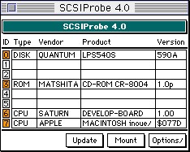

★SOUND Manual
★SOUND Manual
まず、ターゲット機（サターンサウンドボックス）とMacintoshに電源をいれます。電源投入後、サウンドボックス内のBOOT ROMが起動し、チップの初期化を行います。この初期化（通常1、2秒）が正常に終了すると、背面にあるLEDがLED1からLED8にむかって流れるように点滅する状態になります。
またこのとき、Macintosh上からSCSI Probe等のソフトを使用してSCSIの接続をみてみるとSCSIの6番に"SATURN DEVELOP-BOARD 1.00"が認識されます。

すべてのセガサターン用サウンドツールはSCSIの通信によってサウンドボックスを制御していますので、SCSIの接続は重要です。ケーブルはなるべくMacintoshと最短でつなぎ、信頼性の高いものを使用してください。
＊以上の状態に不具合がある場合、サウンドボックスあるいはMacintoshのハード的なトラブルが考えられます。
次にMacintoshからサウンドツールのSndSimulatorを起動します。このときSndSimulatorは自動的に、サウンドドライバをターゲット機（サウンドボックス）にSCSIを通じて転送します。Fileメニューから「サウンドドライバの転送」を選択しても同様です。サウンドドライバとはSndSimulatorと同じフォルダにある"SDDRV.TSK"という名称のファイルでサウンドボックスのCPU、68000用のプログラムコードです（転送アドレスは01000hから）。また、同じく"SYSTBL.TSK"はサウンドドライバが参照するシステムテーブルで、サウンドドライバと同時に転送されます（転送アドレスは0400hから）。このふたつを合わせて、サウンドドライバのセガサターン実機には不要な処理（背面LEDの制御など）を省いたものが"SDDRVS.TSK"で、これがプログラミングボックス（MODEL-S）、あるいは実機用のサウンドドライバです（転送アドレスは0hから）。この"SDDRVS.TSK"はサウンドデータの制作には基本的に使用しないものですが、機能メニューから「S-ボックス用サウンドドライバの転送」を行って"SDDRVS.TSK"を転送することによって、実機と全く同じサウンドドライバで鳴らす状態をシミュレートすることができます。
SndSimulatorを起動したら、Fileメニューから「サウンドシステムの起動」を行ってみてください。これによって転送されたサウンドドライバが動作しはじめます。正常にサウンドドライバが動作していれば、背面のLEDのLED1とLED3が点滅する光りかたになります（MIDIキーボード等がサウンドボックスに接続してある場合、MIDIのアクティブセンシングによってLED7かLED8も点滅する場合があります）。
＊以上の状態に不具合がある場合、サウンドボックスとMacintosh間のSCSI通信が正常に動作してない可能性があります。
サンプルのサウンドマップを開いてみてください。はじめてサウンドマップを開く場合は転送時に「ファイルがみつかりません」というエラーがでるはずですが、問題ありません。
SndSimulatorはパス（どのディスク上のどのフォルダのなかのなんというファイル名か）に基づいて転送すべきデータ（データファイル）をさがして転送します。このパスが正しく設定されていないと「ファイルがみつかりません」というエラーをだします。この場合、SndSimulatorのマニュアルを参照して、正しくパスを設定しなおしてください。
パスを設定したあと、ファイルメニューから「保存」を行えば、以後は新しいパスによってデータの転送を行います。サウンドマップに登録した転送データファイルをMacintoshのFinder上で移動したり消去した場合も同様にパスの設定をやりなおしてください。
SCSI通信中は背面のLEDの点滅が止まりますが、通信が正常に終了すればまた点滅がはじまります。LEDが点灯したままの状態になったら、SCSIの通信かサウンドドライバがハングアップした可能性がありますのでサウンドボックスをリセットしてサウンドドライバを転送しなおしてください。
次に機能メニューから「サウンドシミュレータ」を選んで、シーケンス0をクリックし黒く反転させ、スタートボタンを押してください。サンプル曲が再生されるはずです。
＊以上の状態に不具合がある場合、MacintoshのHD上に適切なファイルがコピーされていないか、あるいは、サウンドボックスとアンプ、スピーカ等の再生機器の接続に問題がある可能性があります。
★SOUND Manual